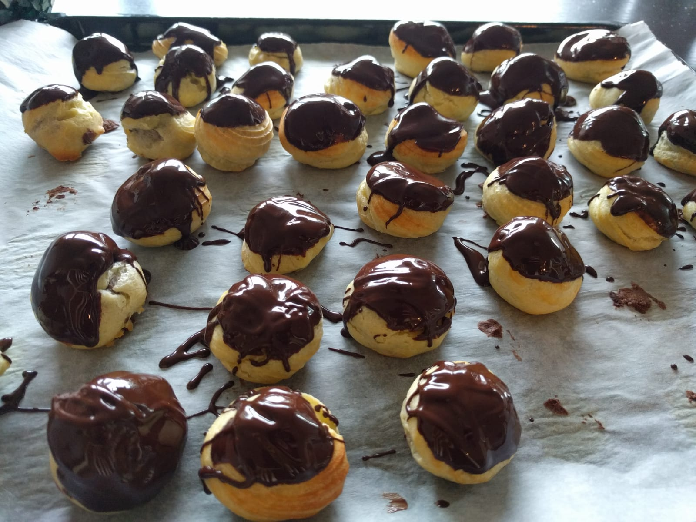

Profiteroles

Pour 6 personnes :
- 60g de beurre
- 70mL de lait
- 80mL d'eau
- 100g de farine blanche
- Deux gros œufs
- De quoi faire la garniture et le glaçage (voir en-dessous)
- Faire fondre le beurre dans une petite casserole à feu doux.
- Ajouter l'eau et le lait, mélanger, augmenter un peu le feu jusqu'à ce que ça bouille.
- Enlever du feu, rajouter la farine, mélanger au fouet vigoureusement jusqu'à ce qu'il n'y ait plus de trace sur le bord de la casserole.
- Battre les œufs dans un bol à côté, pendant que la casserole refroidit légèrement. Les ajouter petit à petit (en 6-8 fois) dans la casserole en mélangeant bien. Il faut que ça forme une pâte bien uniforme, un peu luisante.
- Faire préchauffer le four à 200°C. Mettre la pâte dans une poche à douille, et former des petits tas (~4c de diamètre, ~3cm de haut) sur une feuille de cuisson posée sur une plaque de four.
- Enfourner 25 minutes environ en surveillant : il faut que ça prenne une couleur brun-doré.
- Retirer du four. Faire un trou au couteau sur le côté de la base de chaque profiterole (il devrait y avoir un peu de vapeur qui s'échappe), et mettre le tout au frais (au congélateur ou au frigo) deux minutes.
- Remplir de garniture (avec une poche à douille), et ajouter le glaçage (à la cuillère, ou en les trempant directement).
Idées de garniture : mousse au chocolat, mousse de fruits (par exemple aux poires, ou simplement de la chantilly. Si la mousse est trop solide, on peut la re-mixer avec un peu de crème liquide pour que sa consistance devienne compatible avec l'utilisation d'une poche à douille. Une possibilité plus compliquée mais faisable est de remplir de glace à la vanille — dans ce cas, il faut quasiment ouvrir en deux la profiterole (par le dessous), mettre une boule dedans à la cuillère, et servir immédiatement.
Pour le glaçage, du nappage au chocolat fonctionne très bien, mais on peut préférer un glaçage aux fruits ou à la vanille.